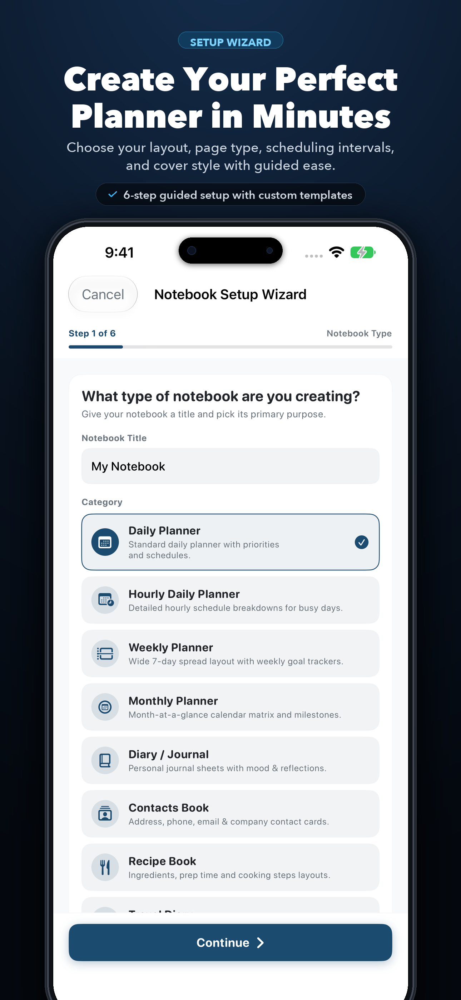
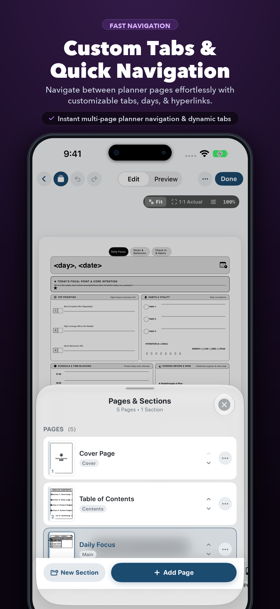
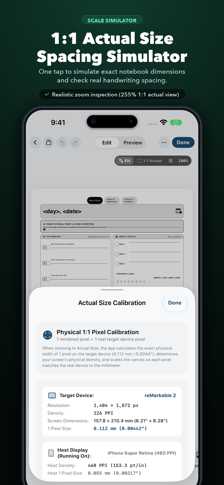
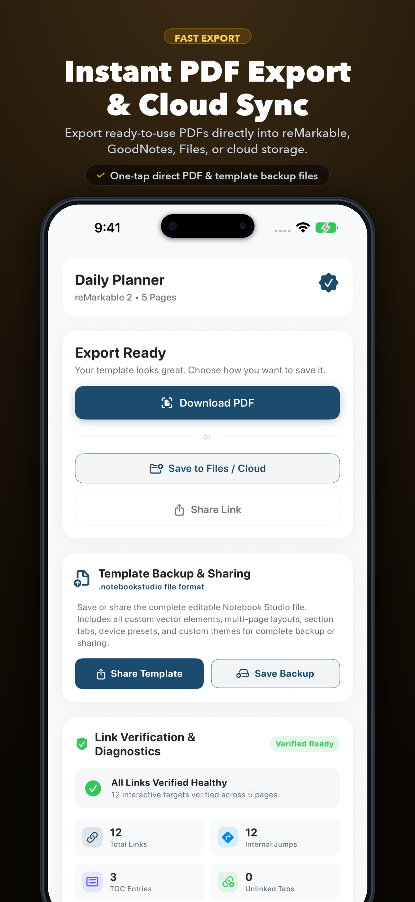
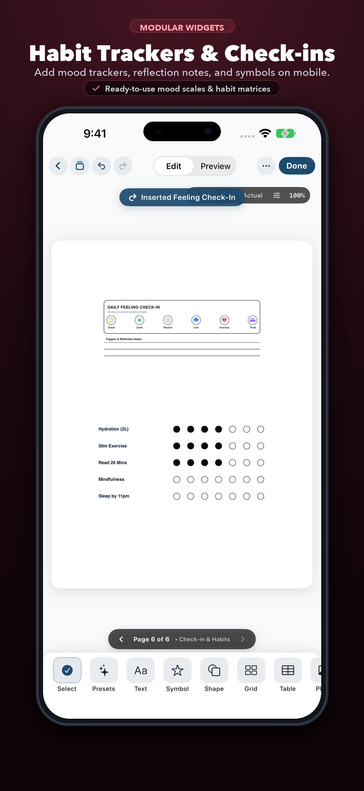
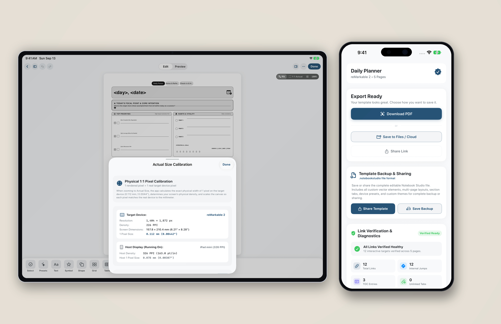
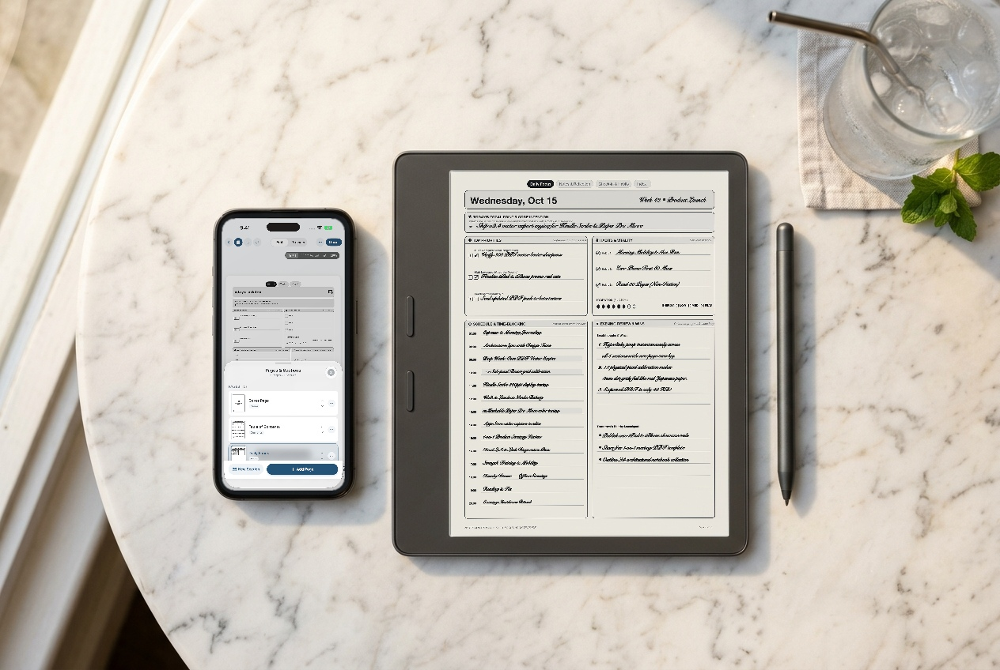

★ Notebook Studio: PDF Designer
•
Available on the App Store
Design bespoke hyperlinked PDF planners right from your iPhone.
Stop settling for bloated, generic templates. Craft precision vector notebooks, hourly schedules, Cornell notes, and habit trackers on iPhone & iPad—calibrated 1:1 for reMarkable Paper Pro & Move, reMarkable 2, Kindle Scribe, Supernote, BOOX, and GoodNotes.

Universal Design Studio • iPhone & iPad Native
support@notebook-studio.com
Pocket-Sized Stationery CAD
Every Studio Tool, Engineered for iPhone
Explore the 6 core workflows inside Notebook Studio for iPhone. Tap any screen to inspect full-resolution details or jump directly to the App Store.




Precision Engineering
Why Stationery Purists Switch to Notebook Studio
Static PDF planners lock you into someone else's workflow. Notebook Studio gives you a full vector publishing engine in your pocket.
★ 1:1 Physical Calibration
Sub-Millimeter Grid & Opacity Control
Whether you write small on a 5mm dot matrix or prefer 6.5mm ruled lines at 18% e-Ink gray opacity, the 1:1 Scale Simulator and Hardware Safe Zone guides guarantee zero toolbar overlap and effortless handwriting legibility.

★ Smart Tables & Schedules
Auto-Populating Hourly Planners
Toggle 1st Col Times on any table to automatically generate Hourly, 30-minute, or 15-minute schedule slots for your exact start and end times—or insert interactive Monthly Calendar grids with dynamic month offsets.

★ Modular Widget Library
50+ Vector Shapes, Frames & Habit Matrices
Combine 8 shape categories, 11 style presets (Soft Card, Washi Tape, Blueprint, Drop Shadow), SF Symbol icons, and multi-element Frame Callouts with magnetic snap-to-grid alignment and a 1pt/10pt Nudge D-Pad.

★ Verified Hyperlink Graph
Instant Vector Export & Link Diagnostics
Generate 365+ page interconnected notebooks (`Year ↔ Month ↔ Week ↔ Day`) with on-device AI or custom repeat cycles. The built-in Link Audit verifies every tab, calendar cell, and Table of Contents jump before exporting.

Automated Date & Quote Engine
Write Once. Populate 365 Pages Automatically.
Drop dynamic tags into any text box on a repeating section page. During PDF compilation, Notebook Studio calculates the exact date, week range, countdown, and curated daily quote for every single page.
Tap a dynamic tag below to preview how Notebook Studio renders it on Page 42 of a Daily Planner:
Template Text Box Input
<day_full>
Compiled Vector PDF Output
Wednesday, February 11, 2026
Full weekday and formatted date for the current page unit
Built for Digital Paper & iPad
Pixel-Exact Presets for Every Major Tablet
Each hardware profile configures exact native screen dimensions, PPI scaling, and left/top toolbar safe margins so your tabs are never obstructed.
reMarkable Paper Pro & Move
1620 × 2160 px (229 PPI) • 954 × 1696 px (264 PPI)
Tuned for both the 11.8″ color Canvas display and the portable 7.3″ Paper Pro Move folio.
reMarkable 2 & reMarkable 1
1404 × 1872 px (226 PPI) • 48pt Safe Margin
Includes dedicated 48pt left/right toolbar safe zones so sidebar tools never cover your tabs.
Amazon Kindle Scribe
1860 × 2480 px (300 PPI) • 10.2″ Display
Ultra-sharp vector grids and finger-touch hyperlinks ready for Send-to-Kindle PDF transfer.
Supernote A5 X2 Manta & Nomad
1920 × 2560 px & 1404 × 1872 px (300 PPI)
Full native PDFOutline bookmark tree integration for Supernote Partner App & USB transfer.
Onyx BOOX Note Air & Go 10.3
1860 × 2480 px (300 PPI) / 1404 × 1872 px
Seamless compatibility with BOOX NeoReader hyperlinks, BOOXDrop, and cloud folders.
Apple iPad Pro, Air & mini
2064 × 2752 px • GoodNotes & Notability
Export directly to GoodNotes, Notability, Apple Notes, or Files via 1-tap AirDrop & iCloud Drive.

iPhone + reMarkable Paper Pro Move
Design on your iPhone on the go and sync pocket-ready planners directly to your 7.3″ Paper Pro Move.

iPhone + Kindle Scribe
300 PPI vector precision with interactive tabs that stay intact through Amazon Send to Kindle.
Complete Cross-Device Studio
100% file compatibility across iPhone and iPad with instant export to your favorite e-Ink tablet.
Knowledge Base
Frequently Asked Questions
Quick answers on e-Ink hyperlinks, custom schedules, transfers, and file compatibility.
Why do my hyperlinks not respond when tapped with a stylus on my e-Ink tablet?
Most e-Ink tablets separate Stylus Writing Mode from Finger Navigation Mode so you don't accidentally trigger links while handwriting. On reMarkable, Supernote, Kindle Scribe, and BOOX, simply tap navigation tabs and Table of Contents links with your finger rather than the stylus nib.
How do I create an Hourly Schedule table with custom start and end times?
Select any Table element on the canvas and open the Layout tab in the bottom drawer. Tap Hourly Planner (or 30m Schedule) in the Presets row, toggle 1st Col Times on, and choose your increment (Hourly, 30 mins, or 15 mins), Start Time, and End Time. The table automatically resizes its rows and populates all time labels.
How do I transfer my exported PDF from my iPhone to reMarkable, Kindle Scribe, or Supernote?
From the Export screen on your iPhone, tap Export / Share PDF and send it straight to the reMarkable Companion App, Amazon Kindle App (Send to Kindle), Supernote Partner App, BOOXDrop, GoodNotes, or save it to iCloud Drive, Google Drive, or Dropbox.
Does Notebook Studio collect any personal data or require a subscription?
No. All notebook design, AI layout generation, and Quartz 2D vector PDF compilation happen 100% locally on your iPhone or iPad. Notebook Studio does not track you, does not collect analytics, and requires no account sign-up.
Ready to Create?
Download Notebook Studio: PDF Designer
Get the complete vector stationery studio for iPhone and iPad on the Apple App Store today and build your ideal planner in minutes.
Download on the
App Store
App Store ID: 6811397092
Customer Support & Feedback
Need Help or Have a Device Request?
Whether you have a question about custom templates, e-Ink device calibration, or feature requests, reach out directly to our support team:
Typical response time: Within 24 hours
Open Dedicated Support Page →